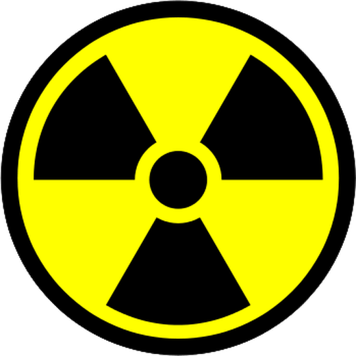

🧭 災難生存 · 實用小知識
☢️ 核／生／化威脅的基本防護觀念
核（輻射）、生物、化學威脅聽起來像電影情節，但在戰爭或重大工安事故中並非不可能。好消息是：民防的基本原則其實很單純，而且真的能大幅降低傷害。這篇整理一般民眾該知道的核生化（NBC/CBRN）基本自保觀念——重點不是恐慌，而是知道「當下第一步該做什麼」，以及破除像「趕快吃碘片」這類常見的錯誤迷思。

▲ 國際通用的輻射警告標誌（trefoil）。圖片：Garam，Wikimedia Commons，公有領域。
⚠ 最高原則
任何核生化事件，官方的即時指示永遠優先於本文。以下是通則性的自保觀念，實際情況（避難時間、是否服藥、疏散方向）務必以政府警報與專業人員指揮為準。
三類威脅的第一步對照
| 威脅 | 立即該做 | 關鍵原則 |
|---|
| 核／輻射塵 | 進到室內最內側或地下室、關門窗 | 進到室內・待在室內・聽指示 |
| 化學／毒氣 | 往上風、地勢高處遠離；脫衣沖洗 | 遠離、除污、就醫 |
| 生物／病原 | 戴口罩、勤洗手、避免群聚 | 衛生＋資訊＋就醫 |
核與輻射塵：進到室內、待在室內、聽從指示
核爆或核設施事故後最大的持續威脅是輻射塵（fallout）。國際民防的核心口訣是 Get inside, Stay inside, Stay tuned：
- 進到室內：立刻進入堅固建築，越中心、越地下越好（混凝土、磚牆能大幅阻擋輻射）。遠離門窗。
- 待在室內：關閉門窗與空調／通風，避免輻射塵進入；至少停留 24 小時或直到官方宣布安全。輻射塵的強度會隨時間快速衰減，最初 24 小時待在遮蔽處最能降低劑量。
- 聽從指示：用收音機持續接收官方訊息（見〈斷網、斷訊時如何取得資訊〉）。
- 若曾暴露在戶外，進屋前先除污（見下方）。飲食用密封、未受污染的儲水與食物——注意：煮沸無法去除輻射污染，詳見〈如何把水變乾淨〉。
除污三步驟：脫、沖、換
- 脫：小心脫掉最外層受污染衣物——這一步就能去除大部分（可達八成）的表面污染。裝進袋子密封、遠離人群。
- 沖：用大量清水＋溫和肥皂沖洗全身與頭髮，勿搓破皮膚、勿用刺激性溶劑；避免污染物進入口、鼻、眼與傷口。
- 換：換上乾淨衣物。
碘片（碘化鉀 KI）：破除迷思
碘片是最容易被誤解的東西。正確觀念：
- 碘化鉀只保護甲狀腺、且只對「放射性碘」有效，對其他輻射、對化學或生物威脅完全無效——它不是萬用解藥。
- 不要自行提早或大量服用：必須在官方發布服用指示時、依年齡建議劑量服用。過量或不當服用可能有副作用。
- 孕婦、嬰幼兒、甲狀腺疾病與碘過敏者更須遵循醫囑與官方指引。
💡 一句話
碘片備而不亂用：可放進儲備，但等官方說「現在服用」再吃，並照劑量。恐慌性亂吃反而有害。
化學／毒氣：往上風、高處，快速除污
- 多數毒氣比空氣重、沿地面擴散，應往上風處、地勢較高處遠離，不要躲低窪處或地下室。
- 盡快脫離污染區，用衣物摀住口鼻減少吸入。
- 脫掉受污染衣物、以大量清水沖洗皮膚與眼睛，盡速就醫（除污與急救見〈基礎急救〉）。
生物／病原：衛生與資訊是最好的防線
- 基本作為與防疫相同：口罩（N95 佳）、勤洗手與消毒、避免群聚、注意飲食飲水衛生。
- 生物威脅通常不會立即顯現，密切關注官方公告、身體不適盡快就醫。
- 家中常備口罩、消毒用品與常用藥（見〈居家儲備〉）。
輻射防護三原則：時間、距離、屏蔽
要降低輻射劑量，記住三個互相搭配的原則，任何時候都適用：
- 時間（Time）：暴露時間越短、累積劑量越低。輻射塵的強度在最初幾小時衰減最快——這也是「待在室內至少 24 小時」的道理。
- 距離（Distance）：離輻射源越遠越安全，劑量隨距離快速下降。盡量遠離污染區與沉降的輻射塵。
- 屏蔽（Shielding）：越厚、越密實的物質（混凝土、磚牆、泥土、大量書籍）擋輻射效果越好。這就是為什麼要躲進建築最中心、最地下的位置。
避難位置怎麼選、要儲備什麼
- 最佳位置：鋼筋混凝土大樓的地下室或中央樓層的內側房間（四周有越多牆壁與樓板包圍越好），遠離屋頂與外牆——輻射塵會累積在屋頂與地面。
- 密封：關閉並盡量以膠帶、濕毛巾封住門窗縫隙與通風口，減少輻射塵飄入。
- 儲備：密封的飲用水與食物、收音機與電池、頭燈、急救包、常用藥、口罩、垃圾袋（如廁與污物）、以及官方指示才服用的碘片。份量參考〈居家儲備〉。
- 就地避難的通用要領，與空襲避難相通，見〈空襲警報來了怎麼辦〉。
輻射塵期間的飲食與飲水
待在遮蔽處時，只吃密封、事件前就已封存的食物與飲水最安全——包裝完好的罐頭、瓶裝水，表面擦拭乾淨後即可食用。不要食用曝露在外、可能沾附輻射塵的蔬果或開放水源；如需取用容器外層可能受污染的物品，先擦拭或沖洗外層再開封。特別提醒：煮沸與過濾無法去除輻射污染，甚至煮沸會因蒸發而濃縮，這點與生物性污染完全不同，詳見〈如何把水變乾淨、能安全飲用〉。等官方宣布安全後，再依指示恢復一般飲食與用水。
別忽略心理層面
核生化威脅最容易引發的其實是恐慌——而恐慌往往比威脅本身更快造成傷害（搶購、亂吃藥、盲目逃竄、輕信謠言）。保持冷靜、只相信官方來源、按部就班執行「進到室內、待在室內、聽從指示」，就已經勝過絕大多數的臨場反應。安撫身邊的家人與孩子、維持基本作息，也是防護的一環。
常見問答 FAQ
Q1. 輻射塵警報時最重要的原則？
進到室內、待在室內、聽從指示：進最內側或地下室、關門窗，停留至少 24 小時或到官方宣布安全。
Q2. 可以自己先吃碘片嗎？
不行。碘化鉀只護甲狀腺、只對放射性碘有效，須依官方指示與年齡劑量服用，亂吃有害。
Q3. 毒氣外洩往哪跑？
往上風、地勢高處遠離，別待低窪或地下室；盡快脫離、脫衣沖洗、就醫。
Q4. 除污怎麼做？
脫（脫外層衣物裝袋）、沖（大量清水加肥皂，勿搓破皮膚）、換（換乾淨衣物）。
Q5. 煮沸能去除輻射或化學污染嗎？
不能。煮沸只殺生物性污染，對輻射與化學物無效、甚至會濃縮，應改用密封儲水或官方指定水源。
權威來源
※ 本文為一般民防知識整理，整理自核安會、WHO 等公開資訊，不能取代官方即時指示與專業指引。核生化事件請務必以政府警報與專業人員指揮為準；用藥（含碘片）請依官方指示與醫囑。